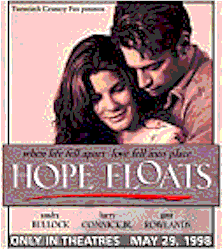

Contents | Features | Reviews | News | Archives | Store |
 |
|
| Movie Credits | Buy It! |
Hope Floats
Review by Elias Savada
Posted 29 May 1998
|  | Directed by Forest Whitaker. Starring
Sandra Bullock, Harry Connick Jr., Written by Steven Rogers |
At times heartwarming home-town kitsch, at other times predictable puppy-love pablum for the young and recently separated, Hope Floats ... but just barely. Sandra Bullock dons an executive producer's hat for the first time and the results are mixed. Better than average, handsomely mounted, but the uplifting suds on this Texas romantic brew fail to sustain and the film seems destined to wander just below the top performers at the box-office for a few weeks before being muscled out by some of the bigger summer films. This screams chick-flick; the guys are out roaring at Godzilla while the gals will gather here.
Returning after some dismal outings (Two If By Sea and In Love and War) and one lead weight of a dud (Speed 2), Bullock has assembled the production team (Lynda Obst and Mary McLaglen) responsible for the single-parent romance One Fine Day, the acclaimed director (Forest Whitaker) of Waiting to Exhale, and Caleb Deschanel, one of the premiere directors of photography, whose beautiful imagery has mesmerized audiences of The Natural, The Right Stuff, Fly Away Home, and The Black Stallion. The script by Steven Rogers plays a smidgen toward the overly melodramatic, but, hey, it's his first produced work. Look for more focused efforts from this freshman in the HBO tele-feature Early Positions and future projects featuring such leading ladies as Susan Sarandon, Julia Roberts, and Jodie Foster. Obviously here's a newcomer who displays some promising penmanship.
Birdee Calvert (Bullock) is thrown for a loop when her cozy suburban Chicago life disintegrates on national television. The former prom queen married to the one time high school quarterback (Michael Paré) gets colorized when her best friend Connie (Rosanna Arquette) reveals on a pseudo-Ricki Lake/Jerry Springer talk show that she has been having a one-year fling with Birdee's husband. The humiliated housewife packs up the family wagon, picks up anchor, and hightails it back home to Smithville, Texas. In tow is her young bespectacled daughter Bernice (Mae Whitman, another alumni from One Fine Day and seen as Christine Lahti's daughter on TV’s Chicago Hope), a daddy's girl who can't cope with her mother's deep funk and the absence of her father. Whitman has some of the best lines in the film and delivers a strong performance as the little girl lost. (Not lost on this viewer was Whitman's connection to Sleepless in Seattle and that film's reflection on An Affair to Remember, while Hope Floats recalls through a television viewing the 1957 soaper Love Is a Many-Splendored Thing.) Very strong talent in such a small body!
The turmoil between Birdee and Bernice is contrasted with Birdee's recollections of her snobby teenage days and her attempts to make things right to those people she wronged back in high school. There is also much ado at home with eccentric matriarch Ramona (Gena Rowlands), a twisted taxidermist (take a gander at her scaredy cats) who wants her emotionally-bruised child to bandage herself back to good mental health. And what better way than through handyman Justin Matisse (singer-actor Harry Connick Jr.), a childhood friend who offers the wounded Birdee (ah, now I see why the screenwriter gave her that name) the chance of building a new nest together. Justin's pleasant looks and demeanor are supplemented by his growing attachment as a father figure to young Travis (Cameron Finley), Birdee's nephew, the unfortunate reject of a failed marriage. Now living with earth mother Ramona, the boy appears in a number of hilarious makeup/costumes (Kermit, Charlie Chaplin, cowboy) at meals and in between, but ultimately provides a down-to-earth crutch for Bernice as she gets battered by school bully Big Dolores.
Hope Floats is a moderately pleasant walk in the park. Small in budget and in scope. Bullock seems to have found her footing again and has surrounded herself with good technical talent and a cast that provides adequate and occasionally compelling performances, but her achievement handling the emotional roller-coaster aspects of her character is not a strong one. Let's face it, she's no Meryl Streep. She's a pretty face that people like to watch, and it is her limitations as "America's sweetheart" that hold back this film from soaring any higher than it does. Some people might fault that more than I do, but Hope Floats deals with a topical subject and difficult issues. It certainly scores some brownie points, but can't muster enough punch to earn a merit badge.
Contents | Features | Reviews | News | Archives | Store
Copyright © 1999 by Nitrate Productions, Inc. All Rights Reserved.